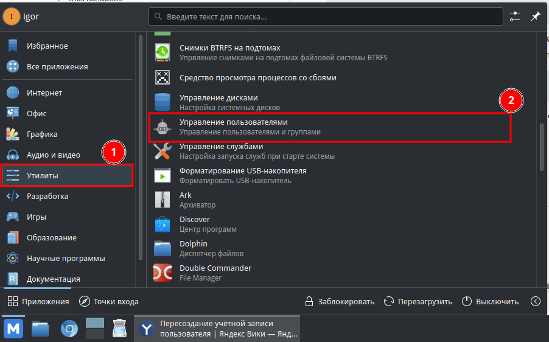

Если ваш графический интерфейс хоть как-то отзывается, вызовите терминал с помощью клавиш:
ctrl + alt + t
Если графический интерфейс не исправен, воспользуйтесь комбинацией клавиш:
ctrl + alt +f3
Авторизуйтесь как администратор
Вызовите команду по завершению неисправной учётной записи. При успехе вас ваыбросить в меню выбора другой учётной записи.
sudo pkill -9 -u имя учётной записи
Перейдите в учётную запись администратора с графическим интерфейсом
Нажмите на кнопку "Пуск"
Выбирете пункт "Утилиты"
Далее в программу "Управление пользователями"
